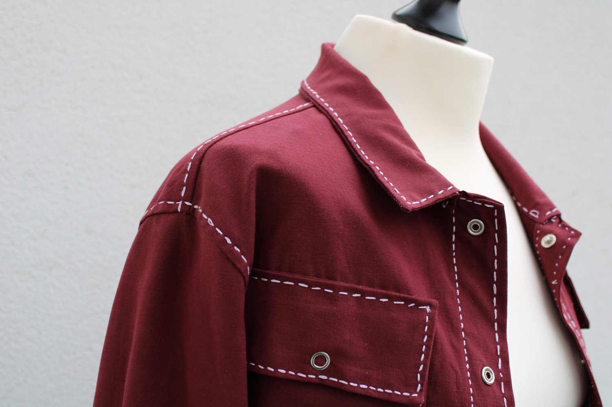
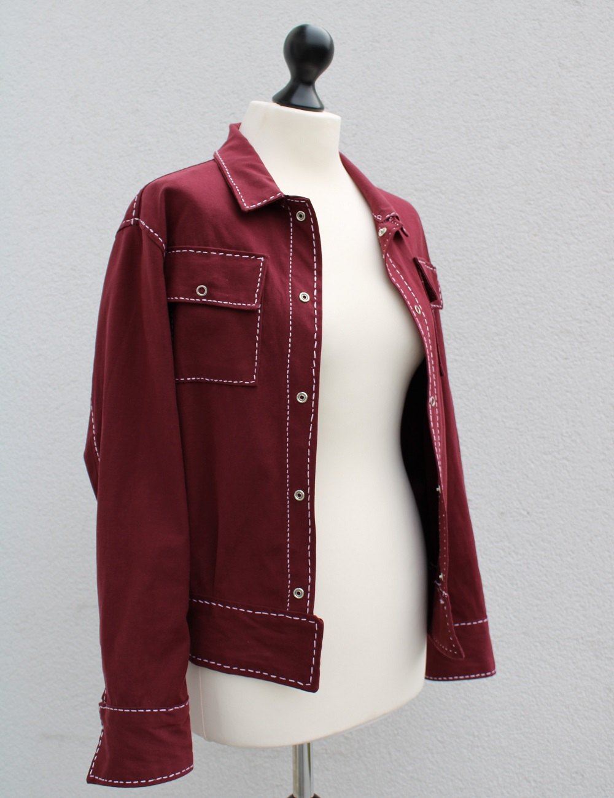
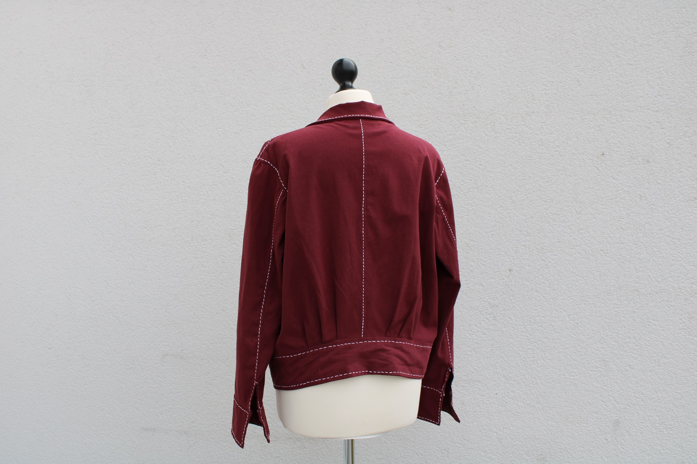
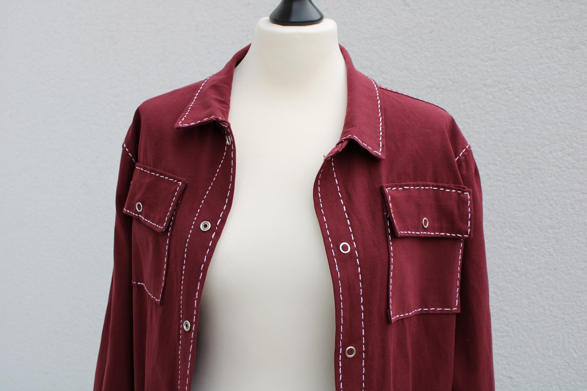
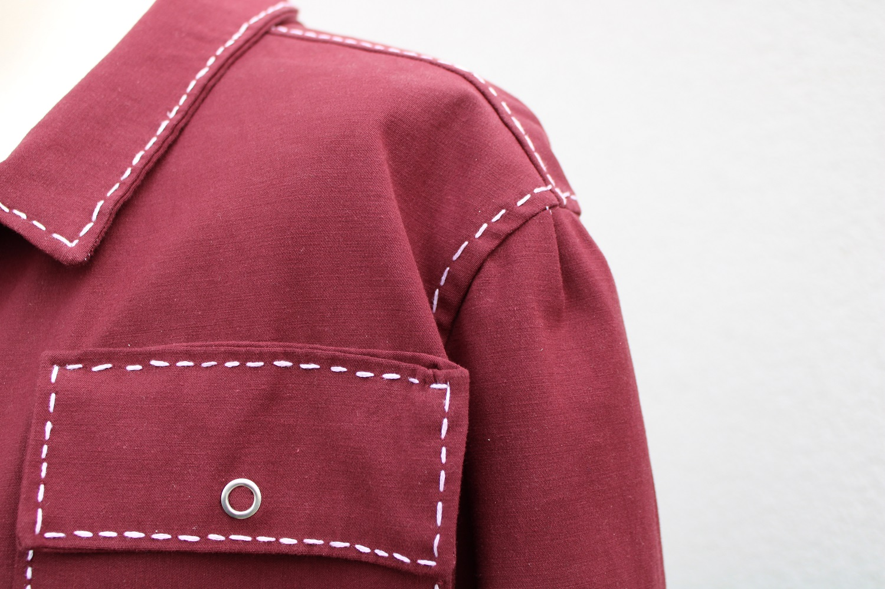

A burgundy jacket with a lot of white topstitching done by hand. The fabric I used is the burgundy cotton satin "Valerie" by Stoffe Hemmers. As this was a spontaneous project, I used the fabric I had in my stash, otherwise I would have either added a lining or chosen a softer fabric.
The pattern is self-drafted, based on another jacket in my wardrobe.




